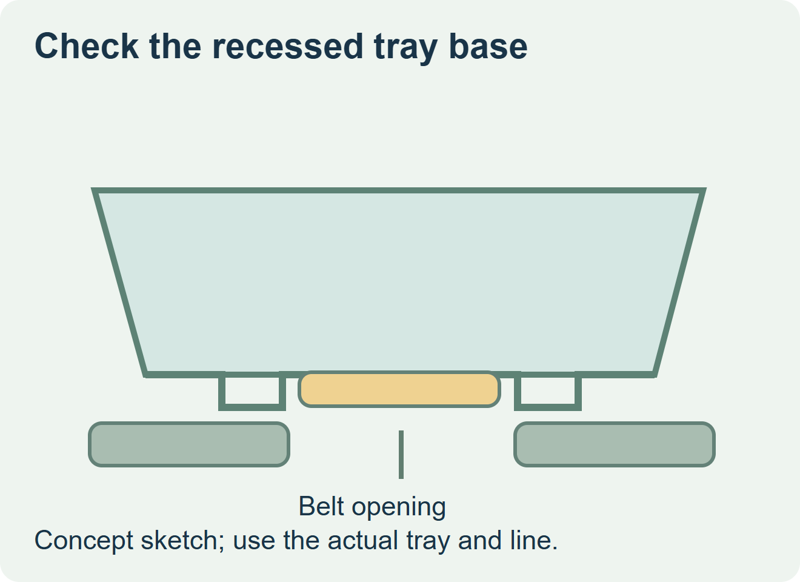
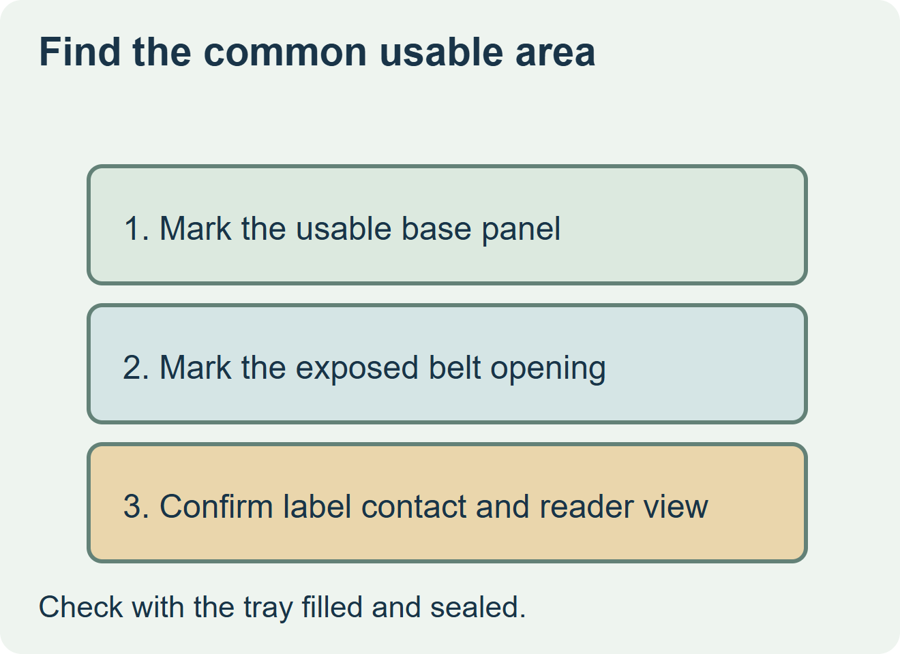

Use a bottom label when the applicator can reach a stable area of the filled tray and the receiver can read it in the intended position. If the label would bridge ribs, sit below the available contact stroke or become hidden by a belt or rack, try a smaller label in the reachable panel or agree a different face before releasing artwork.


Measure what the machine and reader can reach
With a sealed tray at normal fill, mark the feet or support ribs and the actual recessed area. Ask the line team which strip of the base is exposed as the tray passes the applicator. HERMA describes installations that label the top, underside, or both as the pack passes. That capability still depends on how the actual pack is guided and supported. HERMA’s top and bottom labeling overview
Draw the supported label area from the overlap of the exposed conveyor window, the usable tray base and the intended inspection view. Keep the required print inside the portion that stays flat and readable. A label that only sticks to the high points can look acceptable immediately and lift or crease after the tray is stacked or handled.
| Actual base and conveyor | Route to evaluate | Trial evidence |
|---|---|---|
| Stable base exposed at the station | Bottom label sized to the supported landing | Consistent pressure, readable fields and no contact with belt edges or guides. |
| Raised ribs or a narrow recess | Smaller label inside the reachable panel | Bond across the footprint, retained legibility and clearance while trays move and stack. |
| No workable underside or reading position | Receiver-approved side or top location | Fits the new surface and preserves the required shopper or receiving view. |


Judge the filled tray at line conditions
Use the intended filled tray, including any normal distortion or wetness. Have the operator apply representative labels from the proposed roll, then inspect placement and contact before and after normal handling. Verify readability from the actual inspection or checkout position. Keep these observations with the approved drawing so a change in tray mold, belt layout or label size can be reviewed.
Discuss the unresolved label requirement
Send a filled, sealed tray and underside drawing with feet and ribs, the conveyor and labeler arrangement, the label fields, actual temperature and moisture, and quantities. Review food label options and prepare a label specification inquiry. The contact page opens an email draft and lists email or WhatsApp for attachments. Supply, proof options, testing, pricing and timing require project confirmation.